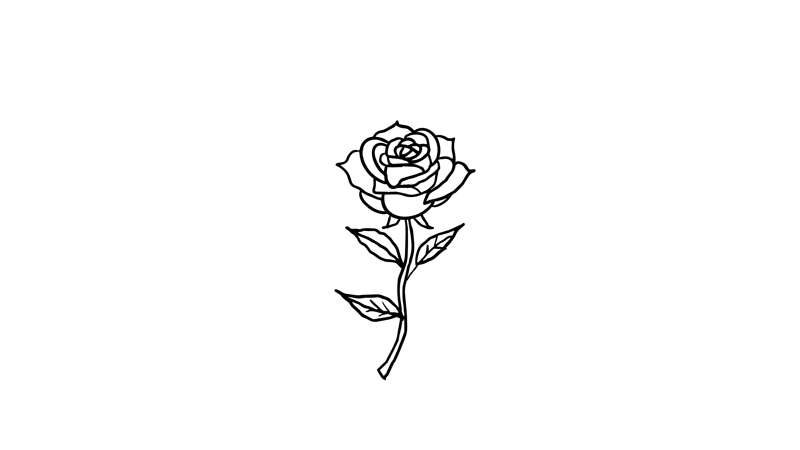

More leaves begin to appear along the stem. The rose now feels fuller, stronger, and more balanced than before.
Each new shape changes the drawing little by little. What started as one simple line is slowly becoming a complete rose.
